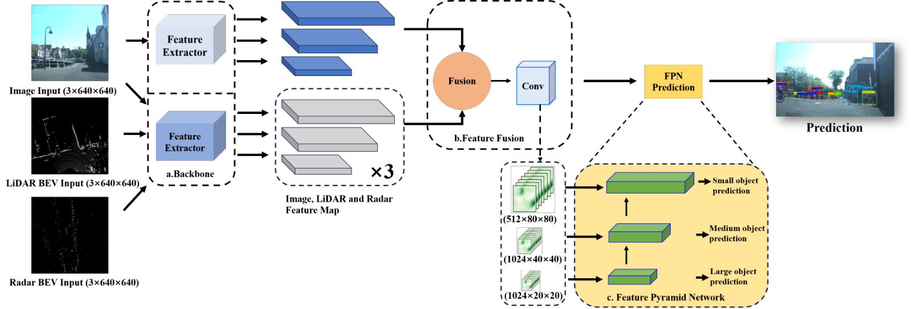
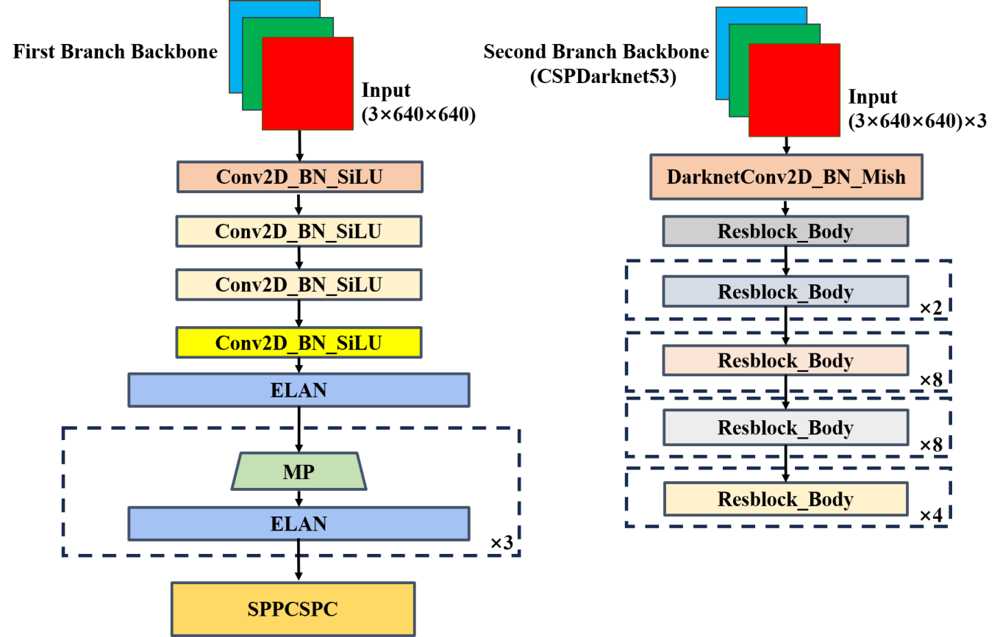
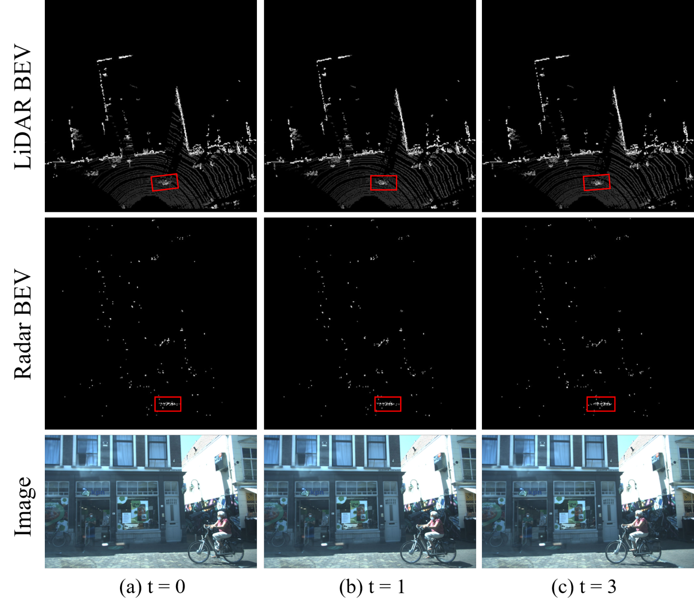
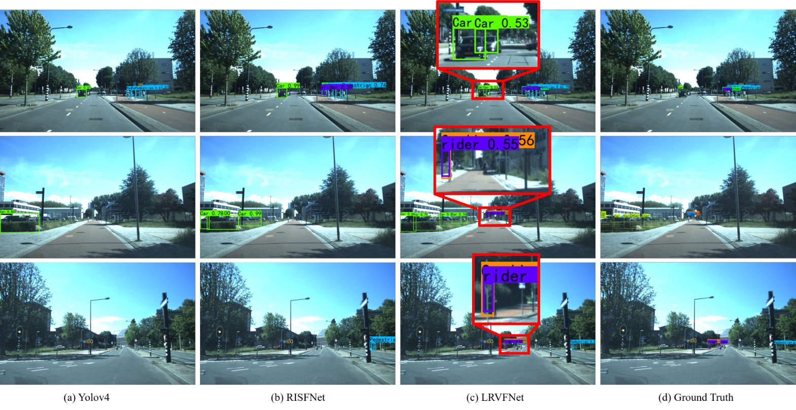

1National University of Defense Technology · 2Tsinghua University · 3ORCA-TECH

Robust environmental sensing and accurate object detection are crucial in enabling autonomous driving in urban environments. To achieve this goal, autonomous mobile systems commonly integrate multiple sensor modalities onboard, aiming to enhance accuracy and robustness. In this article, we focus on achieving accurate 2D object detection in urban autonomous driving scenarios. Considering the occlusion issues of using a single sensor from a single viewpoint, as well as the limitations of current vision-based approaches in bad weather conditions, we propose a novel multi-modal sensor fusion network called LRVFNet. This network effectively combines data from LiDAR, mmWave radar, and visual sensors through a deep multi-scale attention-based architecture. LRVFNet comprises three modules: a backbone responsible for generating distinct features from various sensor modalities, a feature fusion module utilizing the attention mechanism to fuse multi-modal features, and a pyramid module for object reasoning at different scales. By effectively fusing complementary information from multi-modal sensory data, LRVFNet enhances accuracy and robustness in 2D object detection. Extensive evaluations have been conducted on the public VoD dataset and the Flow dataset. The experimental results demonstrate the superior performance of our proposed LRVFNet compared to state-of-the-art baseline methods.
An ELAN-based backbone for the RGB image and CSPDarknet53 for the two BEV inputs, each producing features at three scales.
Per-modality self-attention followed by a shared global-attention gate, applied at every scale to combine image, LiDAR and radar cues.
A PANet-style neck with SPPCSPC enlarging the receptive field, predicting small, medium and large objects.


2D detection AP (%) on the View-of-Delft dataset.
| Modality | Method | AP35 | AP50 |
|---|---|---|---|
| Image | YOLOv4 | 31.06 | 29.78 |
| Image | YOLOv7 | 83.74 | 80.65 |
| Image + Radar | RISFNet | 66.78 | 45.55 |
| Image + Radar | LRVFNet (Ours) | 88.30 | 85.03 |
| Image + LiDAR + Radar | RISFNet + LiDAR | 76.72 | 54.23 |
| Image + LiDAR + Radar | LRVFNet (Ours) | 89.37 | 86.50 |
Results on the Flow dataset.
| Modality | Method | AP35 | AP50 |
|---|---|---|---|
| Image | Faster-RCNN | 77.35 | 57.58 |
| Image | YOLOv4 | 78.46 | 57.04 |
| Image | EfficientDet | 78.62 | 58.52 |
| Image | FCOS | 68.71 | 58.56 |
| Image + Radar | CRF-Net | 79.63 | 57.74 |
| Image + Radar | Li et al. | 85.28 | 64.64 |
| Image + Radar | RISFNet | 90.05 | 75.09 |
| Image + Radar | LRVFNet (Ours) | 91.12 | 78.46 |

git clone https://github.com/nubot-nudt/LRVFNet.git
cd LRVFNet
uv sync # creates the Python 3.10 + PyTorch 1.13.1 (cu117) environment
uv run python train.py # or: uv run python infer.py
Pretrained CSPDarknet53 backbone weights are hosted on
Hugging Face and are
downloaded automatically when pretrained=True.
@article{xiao2023lrvfnet,
title = {Deep LiDAR-Radar-Visual Fusion for Object Detection in Urban Environments},
author = {Xiao, Yuhan and Liu, Yufei and Luan, Kai and Cheng, Yuwei and Chen, Xieyuanli and Lu, Huimin},
journal = {Remote Sensing},
volume = {15},
number = {18},
pages = {4433},
year = {2023},
doi = {10.3390/rs15184433}
}